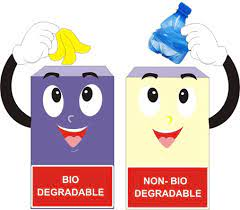

Buy & Sell Waste ,
Get Rewards
Here we give incentives and prizes for every garbage traded to Trash to Cashback and materials recovery facility
"clean mind,green heart,healthy planet"
learn more signup here Biodegradable waste is a type of waste, typically originating from plant or animal sources, which may be degraded by other living organisms.It mainly includes kitchen waste (spoiled food, trimmings, inedible parts), ash, soil, dung and other plant matter. In waste management, it also includes some inorganic materials which can be decomposed by bacteria. Microorganisms and other abiotic factors together break down complex substances into simpler organic matter, which eventually suspend and fade into the soil. The whole process is natural, which can be rapid or slow. Therefore, the environmental issues and risks caused by biodegradable wastes are low. Generally, biodegradation (biodegradable process) occurs naturally which makes it different from composting. And most biodegradable decompositions are eco-friendly. Although few biodegradable substances break down in some harmful manner, leaving chemicals or some other damaging substances in the soil.
A Non-Biodegradable material can be defined as a kind of substance which cannot be broken down by natural organisms and acts as a source of pollution. Unlike biodegradable wastes, non-biodegradable cannot be easily handled. Non-biodegradable wastes are those that cannot be decomposed or dissolved by natural agents. They remain on earth for thousands of years without any degradation. Hence, the threat caused by them is also more critical.Since non-biodegradable wastes are not Eco-friendly, they need to be replaced. As a part of the development of alternatives, scientists have brought forward many ideas like biodegradable plastics, etc. They incorporated some biodegradable materials with plastics and made them easily and rapidly degradable. But this is quite an expensive procedure. As it is an inorganic substance, so it does not get decomposed or degraded in the environment resulting in the pollution of land and water ecosystem. It also creates a very severe effect on aquatic life. Therefore, all kinds of inorganic wastes come under non-biodegradable waste.
Waste materials have a very adverse effect on our environment. They pollute the environment in which we live and make it inhabitable for existence. These waste materials not only pollute our environment but also pollute the environments of other animals living in them making it difficult for them to survive. The billions of tonnes of waste generated every year find their way into landfills or into the sea where they make the organism living in that environment suffer and thus disturb the balance of life in their environment. The smoke produced by vehicles, factories, and others makes the air polluted which leads to various diseases in humans and other. It can cause irritation in the eyes, lung diseases, difficulty in breathing, and other problems. Thus, it is clear that waste materials have an adverse effect on our environment. So it is our responsibility to clean our environment.
Both biodegradable and non-biodegradable materials if not treated properly can cause harmful effects on our environment. Thus proper treatment of the waste material is a must. We must make sure that the waste we produce is decomposed in the most scientific way damaging the environment the least. Various techniques are used to achieve these targets. We must aware people of the serious problems of waste and proper waste management techniques must be taught to them.
3R or Reduce, Reuse and Recycle is the way to remove waste materials from the human society or
environment. We can not directly just ban all the materials which are harmful to us and our surroundings
as they are required for various purposes but to make sure they do not end up in seas, or landfills, we
must do some things. So to achieve all these purposes environmentalists came up with an idea about 3R
(Reduce, Reuse, and Recycle). Let’s learn about it,
Reduce
We must reduce the use of harmful chemicals and plastics and must switch to safer alternatives as early
as possible. For example, reducing the use of plastic bags and promoting the use of jute bags.
Resue
We must reuse harmful plastics substances so that they may not end up in the seas or landfills. For
example, we can use paint buckets (after cleaning) for storing water and other essentials.
Recycle
We should recycle the waste materials to be used again and again. For example, aluminium can be used
again, we can recycle old newspapers and others.
Here we give incentives and prizes for every garbage traded to Trash to Cashback and materials recovery facility